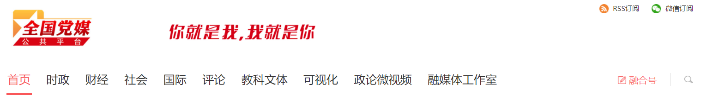
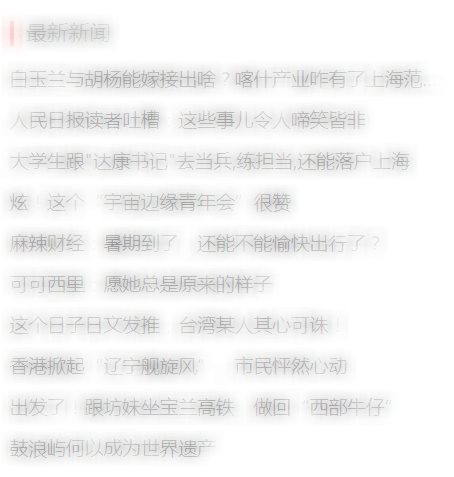

<section>
	<Row :gutter="34" v-if="articleBack">
	  <Col span="6">
	  <a class="go-back" href="javascript:void(0)" @click="goBack">
	  <Icon type="arrow-left-a"></Icon>
	  返回</a>
	  </Col>
	  </Col>
	</Row>
  <Row type="flex" justify="center">
    <Col span="18">
    <div class="header">
      
    </div>
    </Col>
  </Row>
  <Row type="flex" justify="center">
    <Col span="12">
    <div class="article">
      <div>
        <div class="con_new hidden-xs">
        	<h2 class="orginTit">{{ title }}</h2>
        	<div class="article_xinxi">
        		<span>{{ conInfo.channel }}</span>
      			<span>{{ conInfo.time.substring(0,10) }}</span>
      			<span>{{ conInfo.author }}</span>
        	</div>
        	<div v-html="content"></div>
        </div>

      </div>
    </div>
    <div class="footer">
      <!--  -->
    </div>
    </Col>
    <Col span="6">
    <div class="right">
        
      
    </div>
    </Col>
  </Row>
</section>
